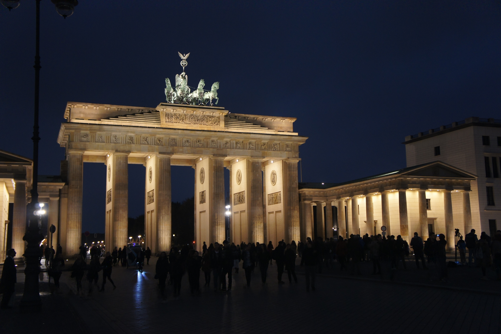

Portão de Brandemburgo
O Portão de Brandemburgo, ou Porta de Brandemburgo, é uma antiga porta da cidade, reconstruída no final do século XVIII como um arco do triunfo neoclássico, e hoje um dos marcos mais conhecidos da Alemanha. Está localizado na parte ocidental do centro da cidade de Berlim, no cruzamento da avenida Unter den Linden e Ebertstraße, imediatamente a oeste da Pariser Platz.
Palácio do Reichstag

O Reichstag, o prédio que abriga o parlamento alemão (Bundestag), é uma das atrações mais visitadas de Berlim. Projetado por Paul Wallot e inaugurado em 1894, este deslumbrante edifício em estilo neo-renascentista tem dimensões monumentais: 137 metros de comprimento e 97 metros de largura. Saiba mais em Simplesmente Berlim.
Castelo de Hohenzollern

Situado a 50 quilômetros (km) de Stuttgart, no estado de Baden Württemberg, o castelo Hohenzollern é um dos mais impressionantes da Alemanha. O castelo foi construído durante o século XI, propriedade da família Hohenzollern. A família Hohenzollern estava no poder durante a idade média e governou a Prússia, Brandemburgo e o Império Alemão até o final Primeira Guerra Mundial. Saiba mais sobre o castelo, nesse vídeo rico em informações do canal Alemanizando.
Füssen
Com seu Castelo de Neuschwanstein que mostra todo o poder que a cidade tem, Füssen também é um convite aos românticos clássicos e tradicionais. A arquitetura do lugar é linda e bem convidativa. Faz parte da rota apaixonante da Alemanha.
Além disso, a natureza exuberante do lugar também traz uma sensação muito boa. Com certeza uma cidade bem especial que você vai adorar conhecer
Os dados apresentados não são exatos e têm o intuito de nortear o viajante quanto ao orçamento. Os valores são pensados no custo-benefício, contando despesas básicas. Caso opte por fazer passeios ou visitar pontos turísticos, os valores devem ser olhados a parte.
| CATEGORIA | VALOR |
|---|---|
| Acomodação | R$ 2.100,00 |
| Alimentação | R$ 6.700,00 |
| Passagem | R$ 12.130,00 |
| Seguro Viagem | R$ 600,00 |
| Transporte | R$ 700,00 |
| CATEGORIA | VALOR |
|---|---|
| Acomodação | R$ 10.000,00 |
| Alimentação | R$ 26.800,00 |
| Passagem | R$ 13.670,00 |
| Seguro Viagem | R$ 350,00 |
| Transporte | R$ ***,** |